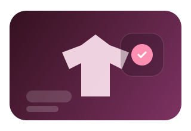
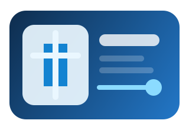

Strategy, interface direction, development, and quality are handled with direct ownership instead of fragmented execution.
Portfolio of Nikhlesh
Independent direction
Work that improves trust
I build websites and software systems for businesses that are done looking average online and done wasting time on messy workflows.
Nikhlesh
Founder & CEO, Advorix Technologies
Founder • Software Developer • Tech Community Leader
Building as
Founder
Founder of Advorix Technologies, building websites and software systems that make businesses look sharper, work better, and feel more credible while contributing to developer communities through mentorship and technical leadership.
Built To Move The Business Forward
- Websites that stop brands from looking average online
- Systems built to remove friction, not add more of it
- Direct founder-level communication from concept to launch
Advorix Technologies
Brand Positioning
Web Systems
WordPress Products
Software Systems
AI Workflows
CEO of Advorix Technologies
14 months of professional software experience
Coding Club Coordinator at Career Point University, Kota
BCA at Career Point University, Kota (2022 - 2025)
93.40% in class 12 at Swamikeshwanand Institute, Sikar
The work sits at the intersection of premium presentation, operational thinking, and practical technical delivery.
Founder Signal
Building websites and systems that increase trust before the first call starts.
Professional Identity
Builder, developer, and operator focused on work that improves credibility, clarity, and day-to-day execution.
Core Work
Business websites, WordPress systems, management software, and AI-enabled workflows.
Projects and systems across business, education, healthcare, and ecommerce
Months of professional software and delivery experience
Core service pillars: web, WordPress, software, AI-backed workflows
Single point of ownership from concept to launch
Cross-Sector Delivery
Execution across company websites, ecommerce, healthcare, education, management systems, and plugin-focused work.
Operator-Level Involvement
Planning, interface direction, build execution, and quality review stay closely tied instead of being split across layers.
Business-First Thinking
The output is designed to improve trust, user clarity, workflow smoothness, and the way a brand is perceived online.
Built With / Worked With
Built through founder work, professional roles, and product execution tied to real company and project names.
These are the companies, brands, and named builds that anchor the portfolio in actual delivery context instead of generic claims.
CEO
Brand Websites
Software Systems
WordPress Products
AI Workflows
Operational Clarity
Advorix Technologies
CEO
Brand Websites
Software Systems
WordPress Products
AI Workflows
Operational Clarity
Advorix Technologies
Professional Summary
A profile shaped by strong academic discipline, hands-on software delivery, and a clear standard for digital quality.
That foundation shows up in how the work is positioned, built, and reviewed before it reaches the client.
Direct Delivery
Every serious project is shaped directly through strategy, design direction, development, and quality review instead of being delegated blindly.
Business-Oriented Thinking
The goal is not just a good-looking interface. The goal is a digital asset that improves positioning, trust, and operational clarity.
Cross-Category Range
Work spans company websites, commerce, education, healthcare, operational tools, WordPress solutions, and AI-backed workflows.
What I Build
I focus on digital work that strengthens brand presence, supports operations, and creates practical business leverage.
Web experiences that look premium and communicate authority.
Company sites and personal portfolios built to increase trust, sharpen positioning, and leave a stronger first impression.
Operational tools designed around real workflow clarity.
Management systems, booking flows, and internal products structured to reduce friction and support actual use.
WordPress and AI integrations built for practical business utility.
From plugins to lead workflows, the focus stays on execution that creates leverage instead of decorative complexity.
About
A builder shaped by academic discipline, practical project execution, and a strong bias toward useful digital systems.
Nikhlesh
Founder & CEO, Advorix Technologies with a focus on practical digital systems and premium presentation.
I am Nikhlesh, Founder & CEO, Advorix Technologies. My work centers on building websites, software systems, WordPress products, and digital experiences that feel premium without losing practical usefulness.
My academic path began with strong performance at Swamikeshwanand Institute, Sikar, where I scored 93.40% in class 12, and continued through my BCA at Career Point University, Kota from 2022 to 2025.
Before building Advorix Technologies, I worked in professional web development roles at Spancoweb and Infigo Software. That experience sharpened my sense of delivery discipline, interface quality, backend structure, and business-facing execution.
Alongside product and web delivery, I served as Coding Club Coordinator at Career Point University, Kota, where I organized programming workshops, coding competitions, and technical seminars while mentoring students in programming. That leadership experience strengthened my ability to build communities, guide learning, and create collaborative technical environments with founder-level ownership.
93.40%
Academic excellence in class 12
14+
Months of professional experience
2022-2025
BCA journey at Career Point University
Capabilities
Capabilities built across interface direction, backend systems, WordPress engineering, and workflow-oriented product development.
Digital Presence
4 Core Skills
Brand Websites
78%
Frontend Systems
83%
UI Direction
88%
Conversion Layouts
93%
Product Engineering
4 Core Skills
PHP
78%
MySQL
83%
System Architecture
88%
SaaS Development
93%
WordPress Systems
3 Core Skills
WordPress
78%
Theme Development
83%
Plugin Development
88%
Operational Software
3 Core Skills
Management Systems
78%
Business Logic
83%
Admin Workflows
88%
AI & Automation
3 Core Skills
AI Chatbot Integration
78%
Automation Flows
83%
Lead Generation Systems
88%
Experience
A progression from execution roles into full ownership and long-term brand building.
8 Months
Spancoweb
Web Developer
Built business-facing websites and learned delivery discipline around frontend polish, WordPress customization, and commercial presentation.
6 Months
Infigo Software
Web Developer
Moved deeper into software execution, balancing interface quality with backend structure, integrations, and product-minded implementation.
Leadership Role
Career Point University, Kota
Coding Club Coordinator
Led coding community initiatives through workshops, competitions, technical seminars, and student mentorship that encouraged stronger programming fundamentals and collaborative learning.
- Organized programming workshops and coding sessions
- Conducted coding competitions and technical events
- Mentored students in programming and development
- Helped beginners improve coding and problem-solving skills
- Supported the growth of a collaborative coding community
Present
Advorix Technologies
Founder & CEO
Building a technology brand around sharper websites, cleaner systems, WordPress products, and practical AI-backed execution.
Flagship Work
Selected work that represents my strongest direction in positioning, product thinking, and workflow-centered software execution.
01
Corporate Positioning Platform
Advorix Official Company Website
Built to present Advorix Technologies with stronger authority, clearer service framing, and a premium brand-led web presence.
Brand positioning, authority design, structured service communication
02
Product Workflow System
MTBP - Movie Ticket Booking Platform
A transaction-focused product flow designed around booking clarity, seat interaction, and smoother conversion through better interface structure.
Flow design, system logic, conversion-minded user experience
03
Growth Utility Product
LeadGen Booster WordPress Plugin
A WordPress-focused product concept built to improve lead capture, simplify workflows, and give business websites stronger utility.
WordPress product thinking, lead capture, workflow support
Strategic CTA
If the next build needs to improve trust and remove friction, bring it in early.
The strongest work starts before the visuals: clear business context, a sharper offer, and a system direction that actually supports growth.
Premium website direction
Software system planning
WordPress build execution
Direct strategic communication
Best Fit
The strongest work usually happens when brand ambition, clear goals, and serious execution standards are already in place.
Brands Repositioning Online
For businesses that know weak presentation costs trust before the first real conversation starts.
Teams Building Internal Systems
For teams that are tired of messy workflows, unclear admin logic, and daily operational drag.
Founders Who Need Clarity
For founders who want direct answers, stronger judgment, and execution without hand-holding or confusion.
Leadership & Community
Community leadership that complements founder execution with mentorship, technical guidance, and ecosystem contribution.
As Coding Club Coordinator at Career Point University, Kota, I helped build a stronger developer environment through programming workshops, competitions, seminars, and direct student mentorship. It reflects the same leadership standard I bring to product delivery: clarity, collaboration, and measurable progress.
Organized programming workshops, coding sessions, and technical seminars inside the university environment.
Created learning opportunities through coding competitions and practical development discussions.
Mentored students in programming, problem-solving, and collaborative project thinking.
Technical Workshops Organized
Coding Competitions Conducted
Students Mentored
Developer Community Leadership Platform
Project Archive
A broader archive of websites, operational systems, educational products, and custom digital builds.
Cinema Booking
Now Showing
MTBP - Movie Ticket Booking Platform
A booking experience structured for smoother conversion through clear seat selection, simpler flow, and reliable transaction handling.
Discuss Similar Work
Fashion Commerce

Luxury Edit
Custom Clothing Brand E-Commerce Website
A fashion-commerce presence designed to make product presentation feel sharper, cleaner, and more aligned with premium brand intent.
Discuss Similar Work
Healthcare Ops
Patient Flow
Hospital Appointment Management System
A healthcare workflow system built to simplify appointment handling, scheduling visibility, and day-to-day coordination.
Discuss Similar Work
Retail Store
Smart Checkout
Proshop E-Commerce Store
A retail store experience shaped around stronger product visibility, cleaner navigation, and purchase-focused structure.
Discuss Similar Work
Learning Suite
Course Control
Student Learning Management System
A learning platform designed to organize course access, academic content, and student progress with less friction.
Discuss Similar Work
Desktop Admin
Records Hub
Student Management System
A desktop-focused academic records system built for cleaner administration, structured data handling, and daily operational control.
Discuss Similar Work
Bakery Operations
Daily Orders
Bakery Management System
A business operations system focused on order visibility, inventory awareness, and smoother management for bakery workflows.
Discuss Similar Work
Salon Workflow
Booked Slots
Salon Management System
A booking and service workflow platform built to manage appointments, customer data, and operational clarity in one place.
Discuss Similar Work
Growth Plugin

Lead Engine
LeadGen Booster WordPress Plugin
A WordPress plugin concept aimed at better lead capture, stronger business utility, and more useful workflow support.
Discuss Similar Work
Bakery Frontend
Sweet Display
Frontend Bakery Management System
A frontend concept focused on presentation, product visibility, and smoother interaction around bakery operations.
Discuss Similar Work
Publishing
Editorial Grid
Blog Website
A content platform structured around readability, clean publishing flow, and a more organized editorial experience.
Discuss Similar Work
Brand Identity
Brand Presence
Portfolio Websites
A set of identity-led portfolio builds designed to communicate personality, professionalism, and digital presence more clearly.
Discuss Similar Work
AI Support
Smart Replies
AI Chatbot Integration System
An AI-backed communication workflow designed to improve responsiveness, user support, and operational efficiency.
Discuss Similar Work
Corporate Presence
Brand Command
Advorix Official Company Website
A company website built to give Advorix Technologies a clearer digital identity, stronger service framing, and more premium presentation.
Discuss Similar Work
Brand Journey
Founder Note
Advorix Technologies represents the move from executing projects for others to building a technology brand around my own standard.
After working in professional development roles, I started Advorix Technologies to build digital assets that make businesses look sharper, communicate better, and operate with less friction.
The long-term direction is clear: build useful software, stronger web experiences, WordPress products, and business infrastructure that can hold up under real use.
I do not build polished websites that leave the business weak underneath.
My standard is simple: the website should improve trust, the messaging should make the offer easier to understand, and the system should reduce friction for the people using it. If the design looks good but the business still feels unclear or messy, the work is not finished.
Positioning comes before decoration.
The interface should support trust and decision-making.
The backend should make day-to-day operations easier, not heavier.
01
Building Advorix Technologies
Building a technology brand around stronger positioning, cleaner systems, and work that holds up in real business use.
02
Raising Practical Standards
Approaching every build with stronger design judgment, clearer business thinking, and execution that solves real commercial problems.
03
Developing Useful Digital Products
Focusing on websites, plugins, management systems, and software products that solve real problems without adding unnecessary complexity.
Work Approach
The operating principles behind how I position, design, and build digital work.
Position the brand before polishing the interface.
Make every screen support trust, clarity, and commercial intent.
Engineer systems that reduce friction for both users and operators.
Keep execution direct, disciplined, and fully accountable.
Contact
If your business needs a sharper website or a cleaner system, send the brief with context.
Direct Reach
If you are serious about improving how the business looks and works online, reach out directly.
If you are planning a business website, internal software, a WordPress product, or a cleanup of a weak digital presence, send the objective, the current problem, and the outcome you want.
Best inquiries include:
business context, project goal, current problem, required timeline, and what outcome you want the build to support.
Inquiry Form
Send a clear brief.
Use the form for serious project discussions. The clearer the business context, the faster I can understand the problem and respond usefully.